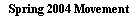
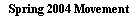

|
Sherlock Holmes,
|
|
Alone in the library of the Calhamer Club, I spent eighty minutes lost in
thought, devoted to my vain attempt to resolve what I had come to think of
as The Curious Case of the False Start.
On the surface, it seemed a simple enough problem, set for the British Crown
by the deviously clever Sultan of Suwat. To obtain an extension on an
important mineral lease at the Port of Suwat, my friend Sherlock Holmes
had been asked to supply the solution to the following puzzle:
We are given a Diplomacy board set up with the pieces in their starting positions,
but we are told that despite this fact, the game has already begun. Further, we
are told that although no neutral supply centres have been captured and all of the
players' home centres are in their own possession, it is also true that no piece on
the board started the game in its current position. In short, each power has managed
to depart from — and then return to — its original board position, without having
any of its original units sitting on the spot where it started the game.
The problem is to determine how quickly this rearrangement of pieces can take place. Not only that, but the Sultan required that the number of dislodgements be maximized, and that to ensure that the mystery was properly solved, the number of dislodgements should be brought by royal messenger to him. As if this was not enough, the Sultan's location (where he was waiting to receive this dispatch) was also left unspecified, except to say that the Sultan awaits the royal courier at the location into which the single unit that retreated in the puzzle withdrew after having been dislodged. Before Holmes stepped away to dine with an acquaintance, leaving me in my puzzled state staring at the Diplomacy board, I had discussed the problem with my friend, exhausting all of the "trick question" possibilities. I was told that (far from being a variant game in which pieces do not begin the game in their usual location) the game is standard in every way. I also learned that the resolution to the problem did not revolve around the fact that the pieces had been accidentally or intentionally removed from the board, and simply replaced with different pieces of wood. When Holmes returned to the game room, I was quite pleased with my efforts. "Holmes," said I, "I am happy to report to you that I have made significant progress toward solving the Sultan's puzzle." "Indeed?" questioned Holmes. "Perhaps my continual urging to use your not inconsiderable talents for deduction have not been wasted! Let us see what you have determined." With some measure of pride, I began. "I am fairly certain that the feat can be accomplished in a mere four movement phases. That is, a game could in fact be beginning 1903 with the positional and centre ownership situations identical to those as at the start of the game, but with the pieces in each position different from those that began the game there." "Excellent," cried Holmes. "You are precisely correct. I admit, Watson, that I was slightly concerned for you after your initial ruminations had you sailing the Russian fleets all the way from one port to the other." I flushed a bit at the recollection. My first thoughts had indeed concerned the lengthy trip that the two Russian fleets would need to make to dock themselves each in the other's port. With a twinkle in his eye, Holmes had left to take his sustenance while I was busily counting the length of time that would be required for a Sevastopol to St. Petersburg sail. "Yes, Holmes," I responded. "I quickly realized that the task of rearranging the pieces could be done much quicker by cooperative action with foreign units. I reasoned that by dislodging the two fleets and rebuilding them with new fleets, the problem's central requirement (that the pieces on the board would be different from those that started the game there) would be fairly met." "Quite so, Watson, and indeed dislodgements are the key to every facet of the solution to this fascinating puzzle." "So I realized, Holmes, and I admit that it was with some measure of self-satisfaction that I have spent the past hour or more trying my level best to quickly return the board to its starting position — but with different pieces at each location — without taking possession of any neutral centres and while dislodging as many pieces as possible. It was while doing this that I realized with surprise that the task can be completed in a mere two game-years." Holmes picked up from here. "Surprise, Watson? Surely it is more than obvious that it can be accomplished for any single power in two game-years." "True, Holmes, but I admit I was astonished to find that all of the powers can do so in the same timeframe simultaneously." "Indeed they can, Watson. In fact, as is easily seen, some powers can do it in half that time, finishing the task in only one game-year, although it is not a stipulation of the puzzle that any of the powers in fact do so." "Yes, Holmes. France, for example, can arrange to have its fleet dislodged by an English attack into the Channel in Fall of 1901 and rebuild the lost fleet in the coming Winter adjustments phase, while having moved his Marseilles army to Paris and vice-versa." "Correct, Watson. Like France, Austria, Russia, and Turkey can (with assistance) also accomplish the feat in a single year, by simply swapping the positions of their two armies while suffering the Falltime dislodgment of their fleet or fleets. As with France, the key, of course, is that the dislodged fleet is removed and then rebuilt, rather than retreated. "Since the English army and the German and Italian fleets cannot possibly be dislodged and disbanded (and then rebuilt) in the first game-year, these three powers require two game-years to accomplish a rearrangement." The great detective then concluded his lucid restatement of the task. "The ability of those four powers to accomplish the task in a single year is, of course, interesting, though not of consequence to us, as our task remains simply to accomplish it for all powers within the minimum time, which as you have found is two game-years, while maximizing the number of dislodgements." "Yes, Holmes, and to this end, I have devoted the past hour to rather gleefully dislodging as many units as I could while recreating the game's starting position within the span of two years." "Excellent, Watson, and to what conclusion have you come as to the number of dislodgements and the Sultan's location?" "I am afraid, Holmes, that I remain a trifle confounded regarding those details. I have determined that a total of nine dislodgements can be made, but as to which single unit must have been retreated rather than disbanded, and the location into which the retreat must have been made, I am in a quandary. I fear that my nine dislodgements must simply be incorrect, for I am unable to determine from them where the Sultan awaits." "Nine dislodgements is a fair attempt, Watson, and you are to be commended. You are correct, however, that a greater number is possible and until you discover those that you have thus far missed, the Sultan's location shall remain hidden to you." "I regret, then, Holmes, that I feel I must request your assistance. I have been dislodging units willy-nilly throughout your luncheon, and despite being fairly sure in the knowledge (that you have just confirmed for me) that it must be possible — as I have begun to say — to 'squeeze' more dislodgements into the two game-years, I have been unable to better my total of nine." "Right, then, Watson," said my friend, checking his pocket-watch. "Although my potted ferns will require their care before long, I believe that we have time for an illustration of the solution." With that, Holmes sat with me at the Diplomacy board, restored it to the starting position, and addressed me. "Let us begin, of course, with the Spring 1901 moves. As you may have realized, the key moves of the solution will take place at the crossroads of Europe." At this point he pulled the Russian fleet on St. Petersburg's south coast to Livonia, the German fleet in Kiel into the Baltic Sea, and the Berlin army to Prussia, putting beyond doubt the short-lived fate of Russia's Northern fleet. He then pushed the Budapest army into Galicia and the Warsaw army into Silesia, where it found itself surrounded by red and black armies, when (rather to my surprise) he advanced the Munich army northeast into Berlin. I had indeed determined that maximizing the number of dislodgements involved rushing the armies on the board toward each other. It seemed to me, and now it stood confirmed by Holmes, that the proximity of the German, Austrian, and Russian armies must be put to good use. However, while I was sure in the knowledge that the Bavarian army, being so centrally located at the start, would play a significant role, I wondered why Holmes would have chosen to concentrate the action where he did, putting the Munich army into Berlin, when he could just as well have let units congregate on Warsaw, Galicia, or, in cooperation with Vienna or Venice, on that very magnet of the board where it begins the game, Munich. I chose to stay silent at this time, and not reveal that this was where my thoughts had been attracted to for most of the evening. "We have but two game-years to replace the Turkish fleet and Russia's southern fleets by dislodging and rebuilding them. Obviously, then, only one of the Sevastopol and Ankara fleets can be dislodged in 1901." Holmes moved the Turkish fleet to Armenia, the Sevastopol fleet into the Black Sea, the Moscow army to Sevastopol (both in preparation for a Falltime dislodgment of the Turkish fleet), and moved the Turkish armies into a position to allow them to end the first game-year in each other's original location, sending Constantinople to the vacated Ankara, and Smyrna into Constantinople. Turning his attention to the west, Holmes moved the French fleet from Brest to the English Channel, and to prepare a Falltime dislodgment of that fleet, Holmes then moved the English fleet from Edinburgh into the North Sea for cooperative action with London. As if I should know his reasons, Holmes quickly moved the Italian units from Venice to Rome, from Rome to Tuscany, fleet Naples to Apulia, and the Austrian army from Vienna to Tyrolia and the Austrian fleet into Venice. My friend proceeded to finish with the French turn by pushing Paris to Burgundy and, to my surprise, Marseilles to Piedmont. Taking all this in, I felt obliged to contribute something at this point. "I find your opening curious, Holmes. Most strange to me is your moving the Marseilles army to Piedmont. I had not considered such a thing and while I see that it masses a great many units together, the easy road to Paris through Gascony, to achieve the exchange of places of the two French armies, seemed far too obvious to avoid. Are you quite sure of your footing here? As you had mentioned to me, one of the powers meets the conditions a year early, and what you are proposing with Piedmont seemingly makes it impossible for France to do so....unless — I see! you intend to dislodge that army and rebuild it in Paris, with Burgundy moving to Marseilles to complete the French swap in the single year with on more dislodgement than I had divined! Brilliant!" Holmes smiled. "Some but not all of that is indeed my intention, Watson. And yes, I believe we have found what may be the first of the dislodgements you overlooked." 2013 EDITING ENDS HEREAt this point, Holmes moved the Paris army to Gascony (which was not unexpected by me), and then quickly made the following moves: the French army from Marseilles was pushed into Piedmont, the Italian armies were rearranged such that Rome was moved to Tuscany and Venice into Rome, and the Austrian army from Vienna was sent into Tyrolia. I saw at once that the French unit in Piedmont could be a Falltime victim of an Austro-Italian attack from Tyrolia and Tuscany. Of course! This dislodged French army could then be removed, and a new one built at Paris. With the army that was originally in Paris making its easy unobstructed journey via Gascony to Marseilles, France would still fulfill the requirements of the puzzle in a single game-year.Before proceeding, Holmes made one more move that surprised me, casually moving the English army from Liverpool into Wales. At the time, I thought it of no importance, and allowed it to pass without comment. Satisfied that I had understood the situation in Piedmont and how that not only provided another dislodgment but allowed France to be completely restored to its original position but with different units by the end of the first game-year, Holmes continued. "Surely, Watson, you progressed far enough to conclude that the proximity of Venice and Trieste is of great advantage to us." Holmes moved the Austrian fleet into the vacated Venice, and the Italian fleet from Naples into Apulia. At this point, Holmes had illustrated all of the Austrian, Italian, French, Turkish, and Russian moves (for he had indicated that both Warsaw and St. Petersburg held in the first turn) for Spring of 1901. He finished creating the position for Fall 1901 by moving the German fleet and the second English fleet. Remarking that "like the army we have moved from Smyrna to Constantinople, some units can simply move directly to take up residence at their similar unit's starting location," Holmes moved the Edinburgh fleet to Yorkshire, its obvious final destination being London. Turning to the German fleet, he sent it into the Helgoland Bight, a rather curious opening for that unit and one that I had not considered for it. Asked about it, Holmes smiled and said simply, "Other choices are possible, of course, but why should we occupy any neutral supply centres at all, even in a Spring turn?"
"We have now created the game position going into Fall of 1901, Watson. Obviously, as with every standard game, no dislodgements have yet occurred. They will, however, begin to come quickly as we progress toward the solution." "I can see that, Holmes. Here in the first Fall phase, you have managed to set up many units for destruction. The French fleet in Picardy, the Turkish fleet in Armenia, the French army in Piedmont, the Russian army in Warsaw, and the Austrian fleet in Venice are all vulnerable to attacks having the strength to dislodge." "Well done, Watson. Indeed, each of these dislodgements does transpire. Attend while we step through the Fall turn. As you recounted, the French army in Piedmont is dislodged by an Italian attack from Tuscany, supported by the Austrian army in Vienna." "Could it have been otherwise, Holmes? That is, could Austria have made the attack supported by Italy instead?" "Perhaps so, Watson, but taking account of the geography in this part of the board, seeing as how only armies are involved here, and because Piedmont is not a supply centre, it matters not in this case. In other situations, however, the manner in which the units are dislodged is quite important to the solution. If the wrong unit is moved, the number of possible dislodgements is reduced." Taking this as his lead, Holmes dislodged the Turkish fleet by moving the Russian fleet from the Black Sea, indicating that it was given support from the army in Sevastopol. He then pushed the Italian fleet from Apulia into Venice, indicating that it was supported in this move by the army in Rome, and in this way dislodging the Austrian fleet. Next, Holmes caused the French fleet in Picardy to be dislodged by the English army, convoyed from Wales by the Channel fleet, and supported in its landing by the German army in Burgundy. I had not considered this possibility, but almost at once I saw the significance. "Beautiful, Holmes! I now see the solution to what I had found to be one of the most troublesome areas of the puzzle, the problem of how to replace the lone English army with a new and different English army! After the French fleet is rebuilt in Winter of 1901, the English army you just landed at Picardy is immediately in peril and can be dislodged and removed from the board!" "Quite correct, Watson. I had assumed you had already discovered this when you said that it was apparent to you that the feat could be done in two game-years." A bit ashamed, I did not admit to the great detective that I had leapt to an early conclusion on this point. Completing the fifth and final dislodgment of Fall 1901, Holmes sent the Austrian army from Galicia into Warsaw, indicating a support from the German army in Silesia. I began to protest what seemed to be an unwarranted assumption, but then, remembering what Holmes had said about the importance of moving and supporting with the proper unit, I did not query my friend as to whether the move could alternatively have been made by Germany with Austrian support. "Now, Watson, we have five dislodged units, but before we address the retreat phase, allow me to finish the Fall movement phase by completing the journey of a few pieces." Holmes moved the English fleet from Yorkshire to London, the French army from Gascony to Marseilles, and the Turkish army from Ankara to Smyrna. "Other than this," — Holmes dramatically pushed the German fleet from out of the Helgoland Bight into the North Sea — "all the other units held, and we thus have completed the Fall movement phase."
Pausing only a moment to admire his handiwork, Holmes pushed on. "We can now concentrate on the fate of the five units we have dislodged." I hoped that Holmes did not see the surprise that certainly showed on my face when he made the final fleet move, and partly to cover this surprise, I decided to contribute at this point. "The fates of these dislodged units are clear, Holmes. In order to allow the powers to rebuild new units (to, in this way, help fulfill the requirement that different units than those which began the game at each position are in place there at the conclusion of the puzzle), the units must be removed rather than retreated." "That is true of most of the dislodged units, Watson, but is not the case for all of them. You are quite correct that all three of the dislodged fleets must be removed from the board, as each of these powers began the game with but a single fleet, and this is the chance to exchange that for a new one, to be built in the same location." Holmes removed the Turkish fleet from Armenia, the French fleet from Picardy, and the Austrian fleet from Venice. "It is also the case that the dislodged French army must be removed — indeed, because Gascony moved to Marseilles, no valid retreats exist for the dislodged unit regardless!" Holmes removed the French army from Piedmont. "However," Holmes quickly continued, "the Russian army that was just dislodged from Warsaw is another matter. That unit cannot be voluntarily disbanded. It simply must retreat, and it must retreat to Moscow." "Why is this, Holmes?" I asked, completely astounded by what seemed to be an unwarranted leap in logic. "Why not remove the army and rebuild it in Moscow for the same effect?" "This cannot be done, and the reason is elementary, Watson. Consider what has happened to the Russian player's home centres. He has suffered one of them — Warsaw — to be captured by a foreign power, so Russia is now left in possession of only three of his four home centres. If Russia chooses to remove the dislodged Warsaw army, he would be left with three units on the board. Thus, he would become ineligible to issue any orders in the upcoming adjustment phase." I finished the thought. "Of course! If he disbands the army, his loss of Warsaw means that he could not rebuild it in Moscow after all!" "Yes, but even more important, Watson, he simply could not take advantage of the opportunity to remove one of his troublesome fleets!" "Brilliant, Holmes! I see now the importance of retreating and not removing that army! Further, with Moscow being the destination of the retreating army, I now see that the Sultan must be awaiting His Majesty's courier in the city of Moscow!" After a moment's thought, spent by a very satisfied-looking Holmes in the effort of relighting his pipe, I realized that Holmes still had not justified his conclusions to me. "Why Moscow, Holmes? Could not the Sultan be in Prussia or Livonia or the Ukraine? It seems to me that the dislodged army could just as easily have retreated to any of those locations as well!" Holmes chose not to respond, and continued, with a bemused expression on his face, his efforts to relight his pipe. After another second, I felt compelled to amend my declaration. "In fact, Holmes, even Silesia could be the retreat location! I don't see any reason why the German army from Berlin was forced to open to Silesia rather than to Prussia." Holmes sucked on his pipe, reclining in the overstuffed chair. "You are quite right, Watson, that the German army could have made its first move into Silesia. Be it Prussia or Silesia, whichever of these was occupied by the Berlin army after Spring of 1901 is of no consequence, but the dislodged Russian army definitely retreated to Moscow." "How can you know this, Holmes?" I asked. "Remember always, Watson, the requirement to maximize the number of dislodgements that will occur during the four moves making up the puzzle's solution. As we shall see, that Russian army will be so busy in 1902 that it is simply impossible for it to begin the year anywhere other than Moscow." For the moment, I accepted this, but it was only with a skeptical look on my face that I retreated the dislodged Russian unit into Moscow.
Holmes began again. "Before getting to 1902, however, shall we now consider the adjustments of 1901?" I nodded my assent and Holmes continued. "Both France and Turkey, still in possession of all three of their home centres, and having taken no foreign centres, are eligible to control three units and thus they rebuild in Winter of 1901, restoring these powers to their original position but with different units than those that began the game at each location. Holmes pulled a Turkish fleet from the box and positioned it in Ankara, and similarly put a French fleet onto Brest and a French army in Paris. "Austria finished the year in possession of his home centres and having taken Warsaw. Having voluntarily disbanded his dislodged fleet, Austria is thus eligible at the end of 1901 to make two builds." My friend then placed a new Austrian fleet in Trieste, and a new Austrian army in Budapest. "England, Germany, and Italy, of course, suffered no dislodgements, and neither captured nor lost any supply centres. Thus, these three powers have no adjustment orders to issue. That leaves only Russia. As we've determined, Russia retreated his dislodged army rather than disband it. This leaves him with four units but only in possession of three centres. He can now remove one of his two fleets. The question as to which fleet should be removed is elementary to answer, is it not, Watson?" I was prepared. "Russia must remove St. Petersburg, Holmes. Without doing so, that unit cannot possibly be taken off the board before the end of 1902 and still allow all foreign units to take up positions in home centres. The best we could do is have Germany dislodge it from Livonia in Fall, but this would leave Germany unable to return his attacking unit to Berlin, Kiel, or Munich." After a pause, I added, "However, Holmes, I do not see why that fleet elected to hold in Spring of 1901. It could be in Livonia or the Gulf of Bothnia or even further west by now, could it not? If it were, could it not be just as eligible to be chosen to remain on the board through the adjustments phase? After all, the southern fleet, having successfully dislodged the Turk from Armenia is itself an obvious candidate for dislodgment by Turkish units in Spring of 1902, and can in this way be removed in 1902 instead." "No, Watson; this could not be done without adversely affecting the total number of dislodgements. As I said, the units along the steppes of Russia and Poland will be far too busy to assist in removing Russia's northern fleet through dislodgment. It simply must be the case that the St Petersburg fleet — whether it has held (as we have postulated here) or moved in the first game-year into Finland, Livonia, or elsewhere — is removed by Russia voluntarily in the adjustment phase." Holmes picked up the fleet from St. Petersburg and casually tossed it into the box. "Two moves down, with two to go, Holmes!" I said excitedly. "We have made only five dislodgements so far, however. I admit I am anxious to learn how many more than the nine I discovered are to be made." "Then let us proceed apace, Watson, to Spring of 1902. Remembering that paramount attention must be paid to maximizing the number of dislodgements, what possible victim units have we laid before us?" Looking at the board, I answered. "The Russian fleet in Armenia. That is a certainty. Turkey will surely dislodge it and then in the Fall return to its assigned home centre whichever of his two units advanced in the Spring into Armenia. After removing his dislodged southern fleet, and coupled with the fact that we know Russia must recapture Warsaw this year, Russia will be eligible to build not one but two new fleets to replace his original pair!" "Quite correct, Watson. Well done!" Holmes made the moves, showing that Turkey supported one of his own units into Armenia in Spring of 1902, and the attacking unit then simply returned to its earlier position in the next movement phase. Tossing the Russian fleet into the box, Holmes remarked, "Just as you reasoned, Russia must voluntarily disband this dislodged fleet and rebuild it as a new fleet." I addressed the next candidate for dislodgment that I saw. "The English army must also be dislodged from Picardy in the Spring, Holmes. Only in this way can the unit that attacked it be able to reach its final position on a home centre after the Fall turn. The English army is surrounded by the French in both Brest and Paris and the German in Burgundy, and it is obviously doomed." Proud of myself, I reached for the English army, intending to remove it from the board. "Tut tut, Watson," said Holmes, "You are right that the English army must be removed by force of enemy arms, but it is not wise to do so yet. Indeed, if we did so, the lease held by the Crown on the Port of Suwat would be just as 'doomed' as you accurately described that army. The royal courier would be delivering the incorrect number of dislodgements to the Sultan in Moscow, for we can obtain the correct maximum count only by allowing the English army to survive the Spring." I was taken aback by this. I had assumed that the puzzle was as good as solved, and that simply taking advantage of every dislodgment available would lead to a successful resolution. Studying the board, I haltingly began the correction of my mistake. "I believe I understand, Holmes. There are two units in this area of the board that stand in peril. Picardy, yes, but also Burgundy. It too is eligible to be dislodged. I see now that only one, and not both, of these dislodgements can be made. It would seem that I made the wrong choice in Picardy." "Precisely, Watson. To maximize our dislodgment count, Burgundy must be attacked in the Spring, and the English unit can meet a similar fate in the Fall." "I would like to agree with you, Holmes, but I fail to see how the pieces of every player will end 1902 on a home centre if the English army in Picardy is dislodged there on a Fall turn!" "I never said, Watson, that the English army will be dislodged from Picardy." Holmes thereupon moved Marseilles to Burgundy, indicating that it received support for this Spring move from the newly-built army in Paris. Then he pushed the French fleet out of Brest and into Gascony, while sliding the English army into the vacated Brest. "Of course, Holmes! In the Fall, the French fleet returns from Gascony to Brest, with the support of the Parisian army! The other French army simply reoccupies Marseilles, and, as our friends across the Channel say, 'voila!'" "Exactly, Watson." Holmes made the moves, picked up both the dislodged units — the German army from Burgundy, which was dislodged in the Spring, and the English army that was dislodged from Brest in the Fall, and placed them into the box. "Both of these units, of course, were voluntarily disbanded. We know this is true of the English army, for only by rebuilding it can a new army be established at Liverpool. As for the German army dislodged during the Spring turn, it is less clear. Certainly it could have been retreated to Munich, and then spent the Fall turn in moving to Berlin, where it would fulfill the requirements of the Sultan's puzzle. However, remember that we have been told that only one unit availed itself of its opportunity to retreat, and we have earlier proven conclusively that the Russian army dislodged from Warsaw must have been that unit." "Yes, Holmes, but I still await your proof that Moscow must have been the destination of that army's retreat." Holmes smiled. "Patience, Watson. First, let us attend to the other events of Spring 1902. What more can we deduce?" "Well," I began, "in addition to his Burgundy army (the disposition of which we have already determined), Germany stands vulnerable in the North Sea." After only a moment's thought, I added, "Obviously, the Channel fleet attacks the North Sea (with support from London), and can thereupon end 1902 by landing at Edinburgh, a new position for it." "Correct, Watson," said Holmes, executing the moves. Putting the German fleet into the box, he said, "Again, the German fleet could only have been voluntarily disbanded, and of course, Germany will clearly be eligible to rebuild it along with a new army to replace the one lost in Burgundy." I was anxious to get to Holmes's assertion that the Russian army must have retreated to Moscow, but in scanning the board, I noticed one more detail west of the steppes. "The Italian fleet in Venice is vulnerable to an Austrian attack, Holmes!" Remembering how Holmes had corrected me a moment earlier concerning the fate of the English army, I quickly added, "This unit must either be dislodged now, or must be sent into an Austrian centre — Trieste, obviously — for dislodging in the Fall." "Quite accurate, Watson. Your skills continue to improve. In point of fact, it must be dislodged now. Just as we saw in Picardy, there is but one way to maximize the final number of dislodgements, and in this case, we can obtain two dislodgements rather than one by dislodging Venice now." Holmes pushed the Austrian army from Tyrolia into Venice, indicating the support it received from the Austrian fleet in Trieste, and then put the dislodged Italian fleet into the box. "Yes, Holmes, I see now! In the Fall, the Austrian that took a position in Venice in the Spring is dislodged by one of the two Italian armies — the one in Tuscany that started the game in Rome — with support of the other army — the one now in Rome and which started the game in Venice!" Pleased with myself, and the fact that Holmes did not interrupt or correct me, I made the moves I described, and finished by saying, "Controlling his three home centres only, then, at the end of 1902, Italy is eligible to rebuild the fleet he removed in the Spring, establishing at Naples a fleet that did not begin the game there!" "Your logic is impeccable, Watson. As it stands, we have added to the five dislodgements that were accomplished in 1901 by successful 1902 attacks on German units in the North Sea and Burgundy, an English army in Brest, a Russian fleet in Armenia, and an Italian fleet and an Austrian army, both in Venice." "That's a total of eleven, Holmes! We have already bettered my effort and Russia has yet to re-take Warsaw! The final total is therefore an even dozen, and I am once more impressed by your skill, Holmes. Quite impressed indeed." I continued headlong toward the solution. "Russia retakes Warsaw with support from the German unit in Silesia, and Germany then uses the Fall turn to move that unit to Munich! Now, the Austrian, of course, pulls the army dislodged from Warsaw off the board in the Spring, and as this was his fourth unit and he owns only his three home centres, he need not even rebuild it! All of this explains quite nicely why Germany must have opened by moving Berlin to Silesia, and why Austria and not Germany must have captured Warsaw!" I had raced ahead of myself, however, and Holmes calmly reined me in. "Unfortunately, Watson, nearly everything you just said is completely in error. For one thing, the total number of dislodgements to be reported to the Sultan is not twelve. For another, the issue of whether the German opened the game by moving his Berlin army to Prussia or to Silesia is immaterial. In point of fact, he very well could have made either of the two moves. I noticed that you held your tongue earlier as to the question of whether Warsaw could have been taken in Fall of 1901 by Germany instead of by Austria. Like the question of whether Germany opened to Silesia or Prussia, this is, in fact, another case in which we cannot know and happily do not need to know. Perhaps the attack on Warsaw was made by Germany rather than Austria; either way it happened, you will find that the answers to the Sultan's questions are the same in the end. Whichever of Germany or Austria it was that took Warsaw, the unit-build that was generated by this capture may even have been waived. Since each possibility produces the same result, I simply chose one of the alternatives, and assumed that it was Austria that took Warsaw, and that Austria took full advantage of his opportunity to build two new units." I was astounded by this. "How can the position of the German army not be of consequence to us, Holmes? Surely only from Silesia can that army be sent to Munich!" "You assume too much, Watson. The army never makes it to Munich. The answer to your questions is wrapped up in that retreated Russian army. Recall too, Watson, that I have yet to prove to your satisfaction that the Sultan must be in Moscow. You have apparently not given that point its due thought." "You are right, Holmes. I still see no reason why Russia cannot retake Warsaw after having retreated to Livonia, or anywhere else." "Watson, you have overlooked one most important detail. The army that retreated to Moscow cannot be the unit that ends 1902 in Warsaw! Remember, that is the army which started the game there!" I was mortified that I had missed it. "Of course," I cried. "The other Russian army — which opened the game by moving from Moscow to Sevastopol where it assisted in the dislodgment of the Turkish fleet — must be the army to end up in Warsaw! It must march to Warsaw from Sevastopol in 1902, and therefore must move to the Ukraine or to Moscow in the Spring and into Warsaw in the Fall." "Quite correct, Watson, and its path must go through the Ukraine, not Moscow." A moment's thought convinced me that Holmes was right. "Yes, I see that, Holmes, but I still fail to understand why the lone retreat was necessarily made to Moscow. Russia could have retreated his Warsaw army to Livonia then moved it to Moscow on the Spring turn before using it in the Fall to aid in the recapture of Warsaw by its fellow army advancing from Ukraine. During all this, the German army walks into Munich while the Austrian army, dislodged from Warsaw in the Fall, is removed and rebuilt as a new army at home. With this, the deed is done!" "If that were the case, Watson, consider how many more dislodgements we would obtain. Certainly you see that if the retreated unit must spend a turn moving to its final position in Moscow, we can, as you described so well, accomplish only one more dislodgment, giving us the total of twelve that you mentioned earlier. However, if the army had been retreated, as I claim it must have been, directly into its final position at Moscow, it can spend both the Spring and the Fall turns of 1902 in the execution of support orders, and we can reach thirteen, not twelve, dislodgements." I saw at once, and I slumped back in my chair, amazed once again at my friend's powers of analysis. Holmes concluded the tale for me as I watched. "In the Spring, the Russian moves his Sevastopol army to Ukraine, and orders his Moscow army to support a German attack on the Austrian unit in Warsaw (or, as I have said, perhaps it was an Austrian attack on a German unit; we do not need to know). This dislodged army must be disbanded (although I note that without the restriction on the number of retreats that were made, the dislodged army could perhaps have instead chosen a retreat from which it could simply move during the Fall turn into the home centre where it did not begin the game). "Whether it be it an Austrian or a German unit dislodged from Warsaw in the Spring, we proceed regardless to the next season. In the Fall, having already seen a second consecutive dislodgment accomplished in Warsaw, we see a third, with the Russian now using Moscow to support his own attack from the Ukraine."
I sat stunned at the unassailable logic and beauty of my friend's reasoning, while he continued making observations and tying loose ends for me. "Assuming, as we have, that the German army was dislodged in the Fall rather than the Spring turn, and therefore Germany was not the foreign power to earn a build from the capture of Warsaw, it is interesting to note that at this point, Germany is left in the curious position of having absolutely no units on the board! Still owning all three of his home centres, however, he rebuilds in each one, recreating the position he held at the start of the game. "Elsewhere, Russia finds himself with but two units remaining (these being his armies, which have swapped their original places) and once again in possession of all four of his home centres, so he simply rebuilds his two fleets. "Austria — which as you may have noticed, and like Germany as well, could perhaps have issued absolutely no orders at all in Fall of 1902 — has, in our choice of scenarios granting him the temporary ownership of Warsaw, lost two armies by force during the second game-year, and has lost possession of one centre, making him eligible to build the single army that it takes to restore him to the same position in which he began the game. "On the subject of powers that may well have issued no orders at all, this is true of Italy for the Spring 1902 moves. Italy spent that phase simply watching his fleet be expelled from Venice, and then used his two remaining units to retake Venice in the Fall, thus allowing him to rebuild his lost fleet in the Winter. "England has managed to use the four movement phases to send his army to meet its end in foreign lands while swapping the position of his two fleets without gaining or losing any centres, so he stands able to build a new army at Liverpool at the end of 1902. "Turkey and France, as we have seen, spent the second game-year simply aiding in the destruction of other powers' pieces, neither gaining nor losing any centres while doing so, then returning to the position they held at the beginning of the year." Holmes tapped his pipe to empty it. "So you see, Watson, His Majesty's courier has been instructed to proceed to Moscow, where the Sultan of Suwat awaits with poised pen to sign an extension on the crucial lease. Further, the courier has been instructed to inform the Sultan that the answer to his conundrum as to how many dislodgements can be made while as quickly as possible recreating the game-start position with units other than those that started the game is not an even dozen, but rather a baker's dozen — thirteen." Rising and consulting his pocket-watch, Holmes finished by saying, "Talking of bakers, Watson, we simply must return post-haste to the apartment in Baker Street, where my potted ferns will be wanting my full attention."
|
If you wish to e-mail feedback on this article to the author, and clicking on
the mail address above does not work for you, feel free to use the "Dear DP..." mail interface.